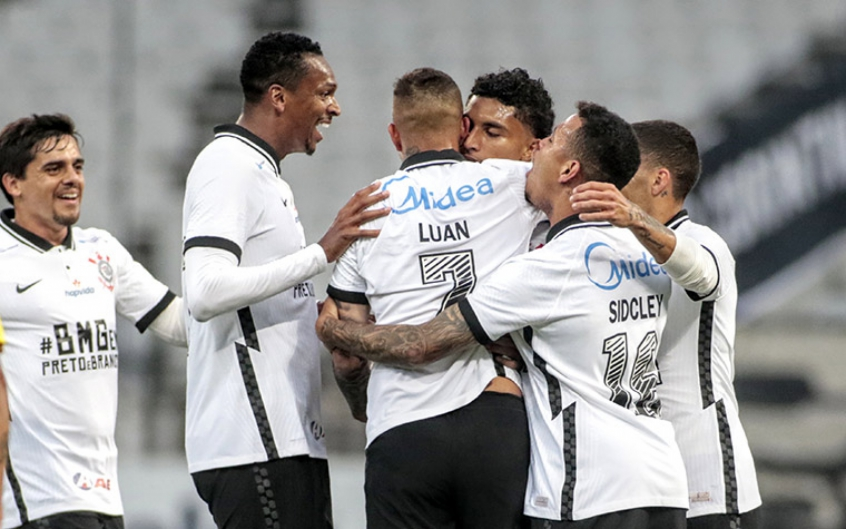

Corinthians anuncia contratação de Willian: "Estou de volta!"

O Corinthians anunciou a contratação de Willian no fim da tarde desta segunda-feira. Em live com o presidente Duilio Monteiro Alves, o meia-atacante se disse ansioso para voltar. O contrato será válido até 2023.
Willian confirmou que chegará ao Brasil nesta quarta-feira, dia do 111º aniversário do Timão. Será a quinta contratação para a temporada. Ele vai deixar a Inglaterra nesta terça-feira.
O vínculo de Willian com o clube de Londres (Arsenal) era válido por mais dois anos, mas o atleta entrou em acordo com os ingleses para a antecipação do término.
Revelado pela base do Timão, Willian está na Europa desde 2007. Ele passou por Shakhtar Donetsk (Ucrânia), Anzhi (Rússia), Chelsea (Inglaterra) e Arsenal (Inglaterra). Antes de Willian, o Corinthians já contratou os meias Giuliano e Renato Augusto, o lateral-direito João Pedro e o atacante Róger Guedes.
Para saber mais...Primeiro gol de Malcom como profissional pelo corinthians completa sete anos; atacante relembra

Este sábado marca o aniversário de sete anos do primeiro gol do atacante Malcom como jogador profissional. No dia 18 de setembro de 2014, na Neo Química Arena, a cria da base alvinegra abriu o placar da partida contra a Chapecoense, que acabou empatada em 1 a 1, pela 22ª rodada do Campeonato Brasileiro.
Para saber mais...Provável time titular do Corinthians acumula 33 experiências de títulos pelo clube
Para recuperar o protagonismo no cenário nacional e vislumbrar novos títulos em um futuro breve, o Corinthians montou uma equipe experiente e que conhece bem o clube. Usando como base as últimas escalações de Sylvinho, o Timão deve entrar em campo, nesse domingo, com uma formação que acumula experiência gloriosa com a camisa alvinegra. A tendência é um time titular contra o América, na Neo Química Arena, com: Cássio, Fagner, João Victor, Gil e Fábio Santos; Gabriel; Willian, Giuliano, Renato Augusto e Róger Guedes; Jô. Se isso se confirmar, o Corinthians terá em campo sete jogadores que já foram campeões pelo clube.
Para saber mais...